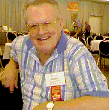

Henry Burns Newspaper Clipping

This article is from the Portland Oregonion Sunday February 19, 1995
DAY EIGHT, FEB. 26:
HILL 382
HILL 382
"Americanee! Americanee!
Tomorrow you die!"
- Japanese lullaby on Iwo Jima
Tomorrow you die!"
- Japanese lullaby on Iwo Jima
First platoon jumped off as soon as light allowed, and walked right into a banzai charge.
Kuribiyashi had expressly forbid them, to conserve manpower, but the warrior code in the Japanese soldier was strong. The
Marines knew from experience: These guys were tough and fearless.
Hank Burns, the Jefferson High athlete, had just brought his platoon up and headed for Hill 382 when the Japanese soldiers struck.
Such as they were. Their uniforms were tattered, their unshaven sideburns long. Burns ordered the platoon to the ground.
American guns blazed. The charge sputtered to a bloody halt.
The charge had come from the foot of Hill 382, one of the best defended parts of the island. First Platoon and the rest of
the 23rd Marines moved closer. A concrete pillbox spouted machine-gun fire.
The Americans fell back. Burns directed his platoon's fire against the pillbox, to keep Japanese eyes out of the firing slots.
He was buying time for a demolitions team to get a satchel charge into the pillbox and kill everybody in it.
He also was getting his own wounded out when he was hit. The bullet entered his left side, passed in front of his spine and
exploded out his right side, leaving a hole the size of a baseball.
"I'm hit!" he yelled. He repeated it three more times, but continued to direct retrieval of the Marine wounded. He stayed on
task for so long that when he finally toppled over, somebody had thoughtfully scooped out a place for him to land.
He was awake when a corpsman packed the wound. Two stretcher bearers moved him out. It was two miles back to the makeshift
aid station on the beach, but the corpsmen got him there in 90 minutes.
Hank Burns' war was over, but for his cool under fire at Hill 382, he awarded the Bronze Star.
Hank Burns recovered, went back to college and rejoined the Portland Fire Bureau when he graduated in 1947. He rose to
battalion chief, then assistant fire marshal before retiring in 1976. Now 73, he and his wife live in Southeast Portland.
Written by Jeff Mapes, A reporter for the Portland Oregonion
Maintained on web site by Rowland Lewis
Last Modified 08/26/2000